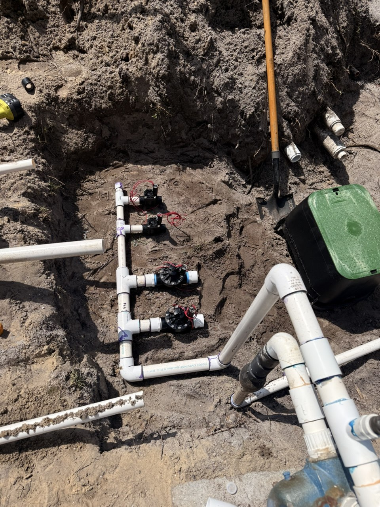

With Orlando's scorching summer temperatures and high humidity, knowing exactly how often to water your lawn can mean the difference between a lush, green paradise and a brown, stressed-out yard. As Central Florida's premier landscaping professionals, we've helped thousands of Orlando homeowners achieve beautiful lawns even during the hottest months. Here's your complete guide to summer lawn watering in Orlando.
Understanding Orlando's Summer Climate & Your Lawn's Water Needs
Orlando summers are intense—with daytime temperatures regularly reaching 90-95°F and afternoon thunderstorms providing inconsistent rainfall. Your lawn requires approximately 1-1.5 inches of water per week during summer, but this can vary based on several factors:
- Grass type: St. Augustine, Bahia, Zoysia, and Bermuda all have different water requirements
- Soil composition: Sandy Florida soil drains quickly, requiring more frequent watering
- Sun exposure: Full-sun lawns need more water than shaded areas
- Recent rainfall: Summer storms can reduce or eliminate irrigation needs
- Water restrictions: Local ordinances limit watering schedules
The Ideal Watering Schedule for Orlando Lawns
For most Orlando lawns, watering 2-3 times per week is optimal during summer months. However, the key is deep, infrequent watering rather than shallow, frequent watering. Here's what the experts at C4 Ground Control recommend:
Best Time to Water: Early Morning (4 AM - 10 AM)
The absolute best time to water your Orlando lawn is between 4-10 AM, with 5-7 AM being ideal. Here's why:
- Cooler temperatures mean less evaporation—up to 30% more water reaches the roots
- Wind is typically calmer, preventing water drift
- Grass blades dry quickly as the sun rises, reducing fungal disease risk
- You'll comply with local water restrictions (most Orlando areas allow watering before 10 AM)
Duration: 30-45 Minutes Per Zone
Each irrigation zone should run long enough to deliver 0.5-0.75 inches of water per session. For most Orlando sprinkler systems, this means:
- Rotor heads: 40-60 minutes
- Spray heads: 20-30 minutes
- Drip irrigation: 60-90 minutes
Pro Tip: Place empty tuna cans around your lawn to measure how long it takes your system to deliver 1 inch of water. This is the most accurate way to calibrate your irrigation timing.
Orlando Water Restrictions: What You Need to Know
Most Orlando-area properties fall under the St. Johns River Water Management District regulations, which typically allow:
Current Watering Schedule (Standard Restrictions)
- Addresses ending in 0 or 1: Monday and Thursday
- Addresses ending in 2 or 3: Tuesday and Friday
- Addresses ending in 4 or 5: Wednesday and Saturday
- Addresses ending in 6, 7, 8, or 9: Thursday and Sunday
- Allowed hours: Before 10 AM or after 4 PM
Drought conditions can trigger more restrictive schedules. Check the St. Johns River Water Management District website for current regulations, or contact C4 Ground Control—we monitor these for our clients and adjust irrigation systems accordingly.
Signs Your Orlando Lawn Needs More (or Less) Water
🚨 Signs of Under-Watering
- Grass blades fold inward or appear wilted
- Footprints remain visible long after walking on the lawn
- Grass has a bluish-gray tint instead of vibrant green
- Leaf blades curl or have a "crispy" texture
- Soil is dry 3-4 inches below the surface
💧 Signs of Over-Watering
- Fungal growth or mushrooms appearing in the lawn
- Spongy, soggy soil that squishes when walked on
- Weeds thriving (they love excess moisture)
- Yellowing grass despite regular watering
- Increased pest activity, especially chinch bugs
- Thatch buildup (a spongy layer between grass and soil)
Different Grass Types, Different Water Needs
St. Augustine Grass (Most Common in Orlando)
St. Augustine is the most popular lawn grass in Central Florida and requires 1-1.5 inches of water per week in summer. Water 2-3 times per week for 30-45 minutes per zone. This grass shows drought stress quickly—watch for wilting and adjust accordingly.
Bahia Grass
Bahia is the most drought-tolerant option for Orlando lawns, requiring only 0.5-1 inch per week. Water 1-2 times weekly. Bahia develops deep roots and can go 7-10 days without water during summer if necessary.
Zoysia Grass
Zoysia needs 0.75-1.25 inches weekly and should be watered 2 times per week. It's moderately drought-tolerant and recovers well from minor water stress.
Bermuda Grass
Bermuda requires 1-1.5 inches weekly, similar to St. Augustine. Water 2-3 times per week, focusing on deep watering to encourage the deep root system this grass is known for.
Smart Irrigation: Technology for Perfect Watering
Modern irrigation technology can take the guesswork out of lawn watering. At C4 Ground Control, we specialize in installing and maintaining smart irrigation systems that include:
- Smart controllers: Automatically adjust watering based on weather, soil moisture, and plant needs
- Rain sensors: Skip watering cycles when sufficient rain has fallen
- Soil moisture sensors: Trigger irrigation only when soil moisture drops below optimal levels
- Wi-Fi enabled systems: Control and monitor your irrigation from your smartphone
- Zone-specific programming: Different areas of your lawn get exactly the water they need
These systems can reduce water usage by 20-50% while maintaining a healthier lawn. They also automatically comply with water restrictions and adjust for Orlando's unpredictable summer rain patterns.
Summer Lawn Watering Tips from the C4 Ground Control Team
- Deep watering beats frequent shallow watering: Encourage deep root growth by watering less frequently but for longer durations. Shallow watering creates shallow roots that are more vulnerable to heat stress.
- Adjust for rainfall: Orlando summer storms can dump 1-2 inches in an afternoon. Skip your next watering cycle if you've received significant rain.
- Water new sod differently: Newly installed sod requires daily watering for the first 2-3 weeks, then gradually transition to the normal schedule. See our sod installation services for expert installation.
- Inspect your irrigation system monthly: Broken sprinkler heads, leaks, and misaligned zones waste water and create brown spots. C4 Ground Control offers comprehensive irrigation maintenance and repair.
- Raise your mowing height in summer: Taller grass (3.5-4 inches for St. Augustine) shades the soil, reducing evaporation and heat stress. This means you can water slightly less frequently.
- Mulch around trees and beds: A 2-3 inch layer of mulch conserves soil moisture and keeps roots cooler, reducing overall landscape water needs.
- Consider drought-tolerant landscaping: Replace water-hungry areas with native Florida plants that thrive with minimal irrigation. Our landscape design team can create beautiful, water-efficient designs.
Common Orlando Lawn Watering Mistakes to Avoid
❌ Watering in the Afternoon
Midday watering (11 AM - 3 PM) wastes up to 50% of water to evaporation. Evening watering (after 6 PM) keeps grass wet overnight, promoting fungal diseases like brown patch and dollar spot.
❌ Ignoring Your Sprinkler System's Efficiency
A poorly maintained irrigation system can waste thousands of gallons annually. Broken heads, leaks, and incorrect coverage patterns are common issues. Schedule professional irrigation inspections twice yearly—spring and fall are ideal.
❌ One-Size-Fits-All Watering
Your sunny front yard and shaded backyard have vastly different water needs. Use separate irrigation zones and programs for different areas. Shaded zones may need 40% less water than full-sun areas.
❌ Neglecting Soil Health
Compacted soil can't absorb water efficiently, leading to runoff and waste. Core aeration in late spring improves water penetration and root health. Consider this essential lawn maintenance service.
When to Call the Professionals
While many homeowners can manage basic lawn watering, certain situations call for professional expertise:
- Your lawn has persistent brown spots despite regular watering
- Water bills are unusually high (indicating irrigation system leaks)
- You're unsure if your irrigation system is functioning properly
- You want to upgrade to a smart irrigation system
- Your lawn shows signs of disease or pest damage
- You need help designing a more water-efficient landscape
C4 Ground Control has over 15 years of experience helping Orlando homeowners maintain beautiful, healthy lawns. Our team of certified irrigation specialists can diagnose problems, optimize your watering schedule, repair or upgrade your system, and provide ongoing maintenance to keep your lawn thriving all summer long.
Conclusion: The Perfect Balance for Orlando Summer Lawns
The ideal watering frequency for your Orlando lawn in summer is 2-3 times per week, delivering 1-1.5 inches of total water weekly, adjusted for grass type, rainfall, and local restrictions. Water in the early morning (4-10 AM), focus on deep watering rather than frequent shallow watering, and regularly inspect your irrigation system for efficiency.
Remember: a healthy lawn is about more than just watering. Proper mowing height, fertilization, pest management, and soil health all work together. For comprehensive lawn care that takes the guesswork out of summer maintenance, contact C4 Ground Control today.
Ready for a Healthier, Greener Orlando Lawn?
C4 Ground Control offers expert irrigation system installation, repair, and maintenance throughout Orlando and Central Florida. Get your FREE irrigation system inspection and consultation today!
Get Your Free Quote →📞 Call us today | ⏰ Serving Orlando since 2009 | ⭐ 500+ 5-Star Reviews